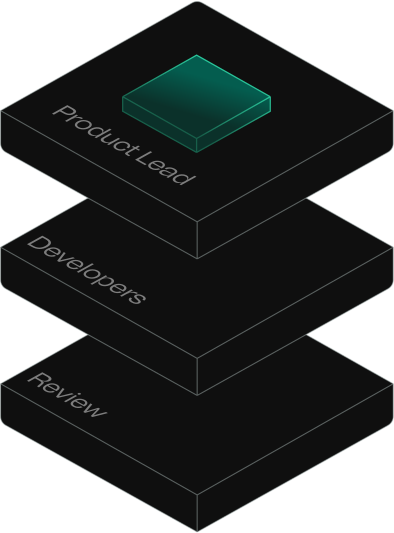

Los encueste. Respondieron 13 de 18. Esto es lo que encontre — y lo que creo que significa para nosotros.
Antes de ir a nuestros datos, quiero compartir lo que esta pasando afuera. No es para asustar a nadie — es para dimensionar donde estamos parados.
La mitad de las empresas medianas argentinas ya reporta resultados positivos con AI. Y 8 de cada 10 PyMEs van a invertir por primera vez este ano. Eso viene de un estudio de SAP con 200 decisores argentinos y otra encuesta de Microsoft con 100 lideres de PyMEs. Esto no es futuro — esta pasando al lado nuestro.
Pero aca viene la parte que duele: a nivel global, el 56% de los CEOs dice que no saco nada de su inversion en AI. Cero. Ni revenue, ni ahorro. ¿Y el 12% que si lo hizo bien? Tiene 3 veces mas chances de reportar crecimiento. La diferencia no es cuanto inviertan. Es como lo implementan.
Las que redisenan workflows obtienen 2.8x mas impacto. No es cuestion de herramientas — es enfoque. Usar ChatGPT para mails no transforma una empresa. Repensar como fluye el trabajo, si.
Ese 5% tiene 1.7x mas revenue y 3.6x mas retorno. El 60% — los rezagados — reporta ganancias minimas. La brecha se agranda, no se achica.
Esto sale de las 13 respuestas. No es una muestra cientifica — somos nosotros. Y los patrones son mas claros de lo que esperaba.
La respuesta numero uno a "que te frena" no fue "no creo en AI." No fue "es muy caro." No fue "no es para mi industria."
Fue: "Avanzamos lento porque lo hacemos solos."
El 38% dijo exactamente eso. Otro 15% dijo "no tengo a quien delegarle." Sumados, mas de la mitad tiene un problema de ejecucion, no de conviccion. Saben que hay que hacerlo, intentan, pero entre el dia a dia y la falta de alguien que sepa, queda en la lista de pendientes.
Y mientras tanto — segun McKinsey — el que ya arranco y rediseno sus procesos esta sacando 2.8 veces mas resultado que el que simplemente le agrego ChatGPT a lo que ya hacia.
"El 85% siente urgencia. El 69% sigue haciendolo solo. Esa brecha es la oportunidad — y el riesgo."
Les pregunte en que areas ven oportunidad para AI. Las respuestas me sorprendieron. No es "quiero generar contenido." Las prioridades son operativas — las cosas que mueven el negocio todos los dias.
Les hice esta pregunta abierta. El 85% pudo articular un dolor concreto. No son deseos genericos — son problemas que cuestan plata todos los dias:
"KPIs en tiempo real." Dejar de vivir en Excel. Dashboards que se actualicen solos.
"Automatizar procesos operativos." Registracion bancaria, comprobantes, ERP conectado al embudo de ventas.
"Camaras que frenen la maquina al ver un error." Computer vision en manufactura. Ambicioso pero viable.
"Post-venta y cobranzas automatizadas." Volumen de WhatsApp, seguimiento manual que se cae cuando escala.
Solo 1 de 13 dijo $0. El resto esta dispuesto a poner plata. El tema no es si quieren. Es que no saben por donde empezar, y no tienen con quien hacerlo.
No hace falta irse a Silicon Valley para ver AI funcionando. Hay empresas argentinas — del tamano de las nuestras — que ya estan implementando. Comparto dos ejemplos que conozco de primera mano.
Empresa de real estate con 30 empleados y 3 socios. Recibe 130 leads por semana pero solo convierte 3-4 reuniones. KPIs en Excel, CRM al 3% de su capacidad, cada area trabaja en su silo. Arrancaron hace un mes con un proceso de AI Ops: mapeo de procesos, automatizacion de lo repetitivo, y conexion de herramientas que ya tenian pero no usaban. El equipo comercial y de marketing ya esta usando AI para coordinar — sin haber sumado una sola persona.
De nuestro propio grupo: una empresa de cementos implemento AI que aprende a predecir cuando el llenado de bolsas va a fallar — y frena la maquina antes de que pase. Tambien automatizaron conciliaciones bancarias y cobranzas. Es la empresa mas avanzada del grupo en implementacion real. Y sin embargo, su CEO dice "no tengo idea que mas hacer." Tiene la herramienta pero no la vision de expansion.
El 38% prefiere capacitar a alguien del equipo. El 31% traeria a alguien externo que implemente. Solo el 15% quiere seguir solo.
El mensaje es claro: quieren ayuda, pero quieren entender. No quieren que alguien venga, haga algo magico, y se vaya. Quieren que les muestren, que implementen, y que les dejen capacidad instalada.
Eso es exactamente el enfoque correcto. El que implementa y ensenha vale mas que el que implementa y te deja dependiente.
Desde Braintly llevamos 15 anos construyendo software. Hace un ano nos metimos de lleno en AI aplicada a operaciones. Estamos haciendo exactamente esto con un par de empresas — sentarnos, mapear procesos, y encontrar donde AI puede impactar de verdad. Si a alguien del grupo le hace ruido lo que vio aca, sabe donde encontrarme.